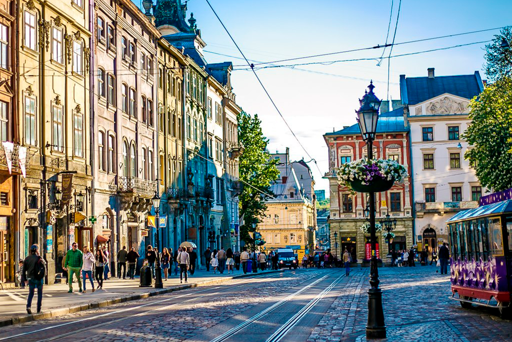

Львів — місто з особливою атмосферою

Львів — одне з найвідоміших міст України. Він відомий історичним центром, старовинною архітектурою, затишними вулицями та культурними пам'ятками.
Чому я обрав Львів
Я обрав Львів через його атмосферу, красиву архітектуру та велику кількість місць, які цікаво відвідати.
Цікаві факти
- Історичний центр Львова внесений до списку світової спадщини ЮНЕСКО.
- Львів є великим культурним центром України.
- У місті багато історичних будівель та площ.
Визначні місця
- Площа Ринок
- Львівська опера
- Високий замок
- Личаківський цвинтар
Особиста оцінка
Оцінка: 10/10